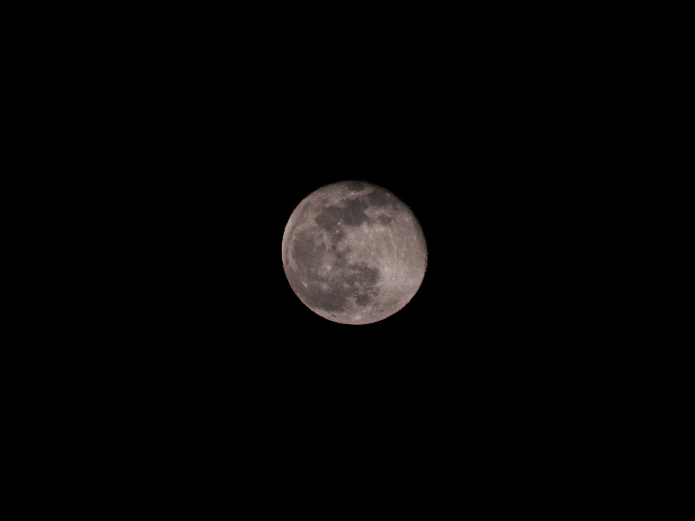
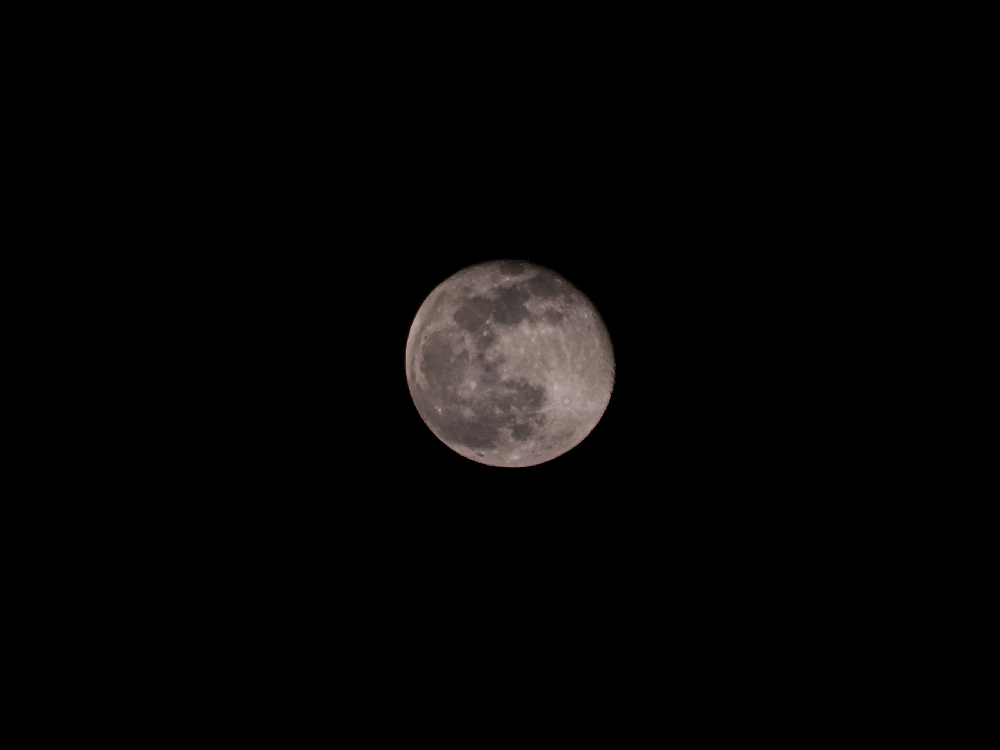
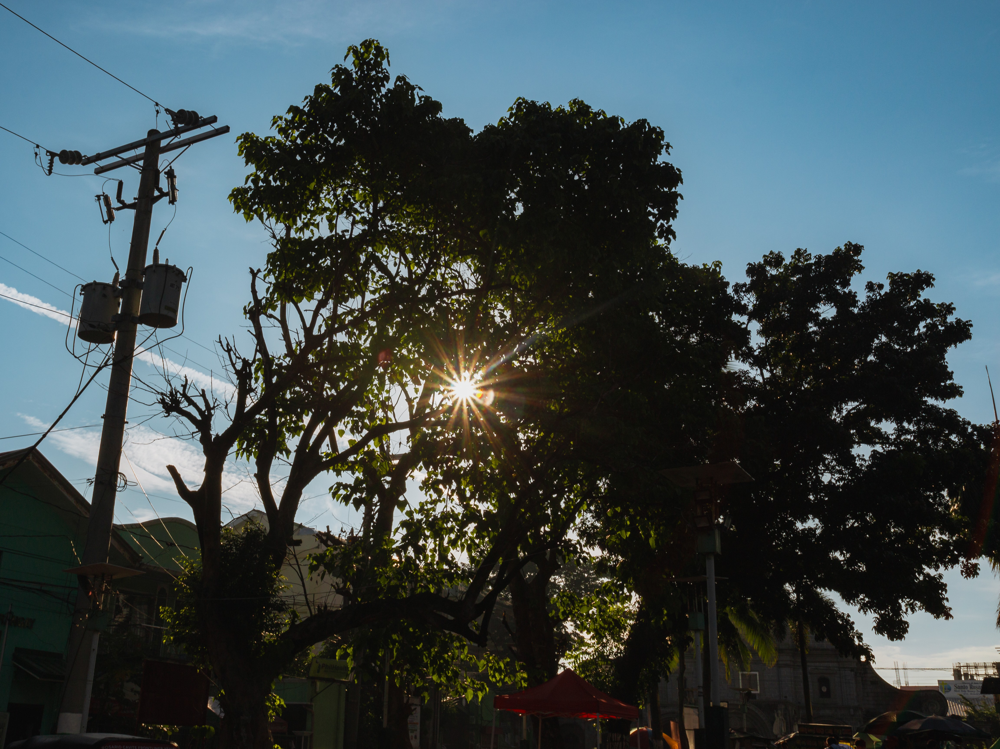
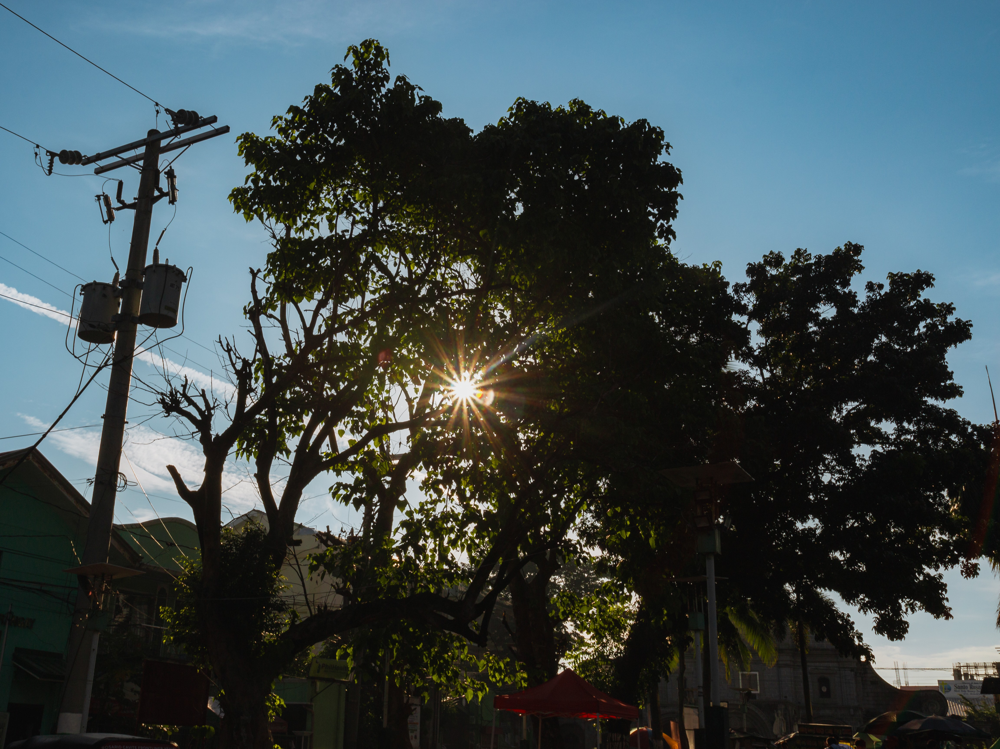

Hello, I'm Eric Vidallon
Based in the historic town of Kawit, Cavite, I am a creative professional who bridges the gap between technology and the arts. Currently a 3rd-Year BSIT student at San Sebastian College - Recoletos de Cavite, I am developing expertise in both hardware and software, applying a structured and analytical approach to everything I do.
When I step away from the technical domain, I am a passionate freelance photographer and musician dedicated to capturing the spirit of my community. My visual style is honed through active membership in the Cavite Camera Club and my role as an official photographer for Baste TV (SSC-R) and the Ministri ng Panlipunang Komunikasyon at the Diocesan Shrine and Parish of Saint Mary Magdalene.
My commitment to excellence extends to music as a member of the Saint Mary Magdalene Band ’98. Representing Kawit on the national stage, claimed multiple awards and recognition across the Philippines, an experience that has taught me the value of discipline, harmony, and timing—qualities I bring to every client engagement.
I am currently expanding my digital portfolio to share my unique perspective with a broader audience. Whether you need a photographer who understands digital storytelling or a creative partner for your next project, I am ready to collaborate.
 

 
